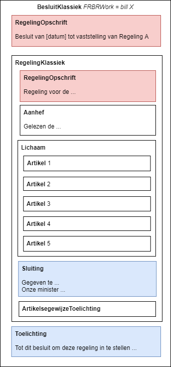

Besluit volgens STOP
STOP definieert de term 'besluit' als: 'Een tekst die de vaststelling of wijziging van (de geldigheid van) een regeling of informatieobject beschrijft'. Met andere woorden: een besluit beschrijft precies hoe een BG een nieuwe regeling vaststelt, wijzigingen op een regeling doorvoert of de inwerkingtreding van een regeling of regelingversie bepaalt.' Het begrip ‘besluit’ volgens STOP is niet steeds hetzelfde als het begrip 'besluit' vanuit juridisch perspectief, omdat de standaard zich vooral richt op documentstructuur. Vanuit juridisch perspectief gaat het om een besluit als bedoeld in de Algemene wet bestuursrecht, een schriftelijke beslissing die op publiekrechtelijk rechtsgevolg gericht is. Deze laatste definitie gaat dus met name om de inhoud van een besluit en de vorm waarin het genomen is door het bestuursorgaan (schriftelijk). Het is belangrijk om bij het werken met de STOP-standaard dit verschil in betekenis in het achterhoofd te houden, want hierdoor ontstaat in de praktijk gemakkelijk misverstanden tussen standaardenmakers en ontwikkelaars, die vooral redeneren vanuit de STOP-definitie, en juristen en beleidsmakers, die vooral redeneren vanuit het juridische besluitbegrip.
Conform STOP kan een besluit de volgende onderdelen bevatten:
Opschrift: dit bevat de citeertitel van het besluit. Dit luidt bijvoorbeeld: 'Omgevingsplan Binckhorst-Zuid'.
Aanhef: dit is een tekst die aankondigt dat het bestuursorgaan het navolgende heeft vastgesteld. Bijvoorbeeld de aanhef van een Algemene Maatregel van Bestuur, conform de Aanwijzigingen voor de Regelgeving:
'Wij Willem-Alexander, bij de gratie Gods, Koning der Nederlanden, Prins van Oranje-Nassau, enz. enz. enz. Op de voordracht van (Onze Minister van/voor … / de Staatssecretaris van …) van (datum), nr. … (, gedaan in overeenstemming met / mede namens Onze Minister(s) van/voor … / de Staatssecretaris(sen) van …); Gelet op …; De Afdeling advisering van de Raad van State gehoord (advies van (datum), nr. …); Gezien het nader rapport van (Onze Minister van/voor … / de Staatssecretaris van …) van (datum), nr. … (, uitgebracht in overeenstemming met / mede namens Onze Minister(s) van/voor … / de Staatssecretaris(sen) van …); Hebben goedgevonden en verstaan
Lichaam: dit is de inhoudelijke kern van een besluit, en kan bestaan uit een:
Vaststellingsdeel
Regelingdeel: dit bevat de daadwerkelijke inhoud, zoals de regels die bijvoorbeeld in een omgevingsplan worden vastgesteld over bouwen in de gemeente.
Inwerkingtreding: dit deel bepaalt wanneer het besluit in werking treedt.
Ondertekening: dit bevat de ondertekening namens het bevoegde bestuursorgaan.
Algemene toelichting: dit bevat de schriftelijke toelichting op hetgeen bepaald is in het lichaam van het besluit. Hierin wordt de inhoud nader verklaard en toegelicht.
Artikelgewijze toelichting: dit bevat een toelichting per artikel van het regelingdeel.
Een besluit kent twee technische vormen:
BesluitCompact: in het besluit is de nieuwe regeling of wijziging daarvan opgenomen als bijlage. Het lichaam bevat in dat geval eerst de vaststelling van het besluit, en daarna een bijlage met de regeling. Beiden zijn technisch bezien onderdeel van het lichaam. Het is technisch daarnaast mogelijk om in het vaststellingsgedeelte van het lichaam nader te duiden wat er precies wijzigt. Dit kan bijvoorbeeld wenselijk zijn wanneer het mutatiescenario intrekken/vervangen gebruikt wordt voor het doorvoeren van een beperkte set wijzigingen, en men wil verzekeren dat een eventueel beroep tegen het besluit bij de rechter beperkt zal blijven tot alleen hetgeen daadwerkelijk gewijzigd is ten opzichte van de eerdere versie.
- BesluitKlassiek: hierbij is de regeling in zijn geheel onderdeel van het vaststellingsgedeelte in het lichaam van het besluit; de regeling wordt niet aan het eind als bijlage opgenomen. XML-technisch is de regeling een apart onderdeel van het besluit; juridisch en optisch is de regeling gelijk aan het besluit. De technische scheiding is nodig voor de consolidatie van de regeling. Een BesluitKlassiek wordt zowel voor bekendmaking van initiële regelingen als van wijzigingsregelingen gebruikt. De klassieke indeling wordt naar verwacht alleen gebruikt voor rijksregelgeving, omdat deze beter aansloot bij de wetgevingspraktijk van het Rijk. Alleen TPOD AMvB/MR maakt het gebruik van deze besluitvorm mogelijk, alle overige toepassingsprofielen schrijven het gebruik van BesluitCompact voor.
Figure 2. BesluitKlassiek voor een initiële regeling 
Het besluit-deel van een bekendmaking in STOP bevat alle in deze afbeelding weergegeven vaste onderdelen, zoals opschrift, aanhef, ondertekening en inwerkingtreding. STOP biedt bovendien de mogelijkheid om een algemene en een artikelsgewijze toelichting bij het besluit te publiceren. Hier kunnen ook nadere stukken bij worden gevoegd die deel uitmaken van de onderbouwing van het besluit, zoals milieueffectrapportages of passende beoordelingen. Het gedeelte van de bekendmaking dat de daadwerkelijke juridische regels (of het beleid) bevat die worden vastgesteld is het regelingdeel, in deze afbeelding 'lichaam' geheten.
STOP onderscheidt de volgende besluittypen:
Een initieel besluit is het eerste besluit waarbij een volledige versie van een regeling wordt vastgesteld. Het is het besluit dat leidt tot de eerste versie van de (geconsolideerde) regeling. Bijvoorbeeld het besluit dat een provincie neemt ter vaststelling van de eerste omgevingsverordening op grond van de Omgevingswet.
Een wijzigingsbesluit is waarin de wijziging van een regeling bekend wordt gemaakt. Het besluit geeft aan hoe wijzigingen op een regeling worden doorgevoerd. Voor meer informatie over het wijzigen van regelingen in STOP zie hier.
Intrekkingsbesluiten geven aan dat een bestuursorgaan een regeling intrekt. Door het intrekken van een regeling komt deze juridisch te vervallen en geldt de regeling niet meer.
Inwerkingtredingsbesluiten regelen wanneer (delen van) een regeling in werking treden.
Voor uitgebreide informatie over en voorbeelden van diverse typen besluiten, zie: